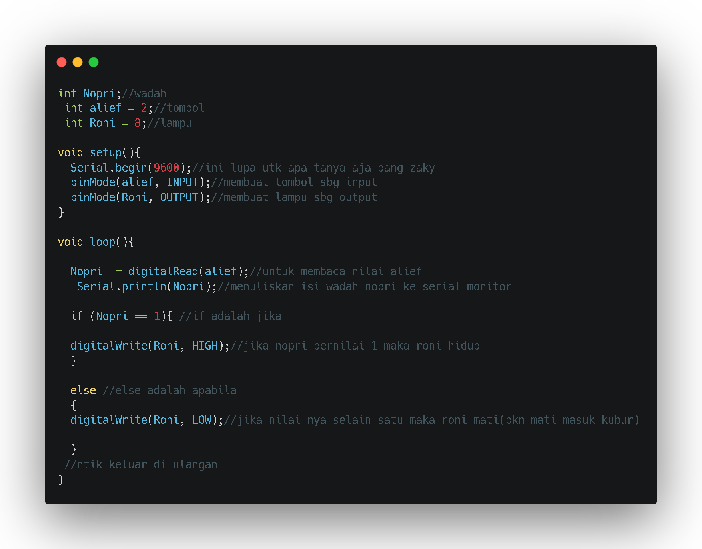

Cara menghidupkan LED dengan tombol dan fungsi serial
Serial.begin(nilai baudrate)
Serial.begin digunakan untuk menentukan kecepatan dan penerimaan data melalui port serial. Kecepatan yang umumnya digunakan adalah 9600 bit per detik (9600 bps).
Serial.print(data)
Serial.print digunakan untuk mengirimkan data ke port serial. Jika datanya kita masukkan ke port serial, maka yang dikirim akan menyesuaikan format tersebut. Dalam hal ini, format yang digunakan bisa berupa bilangan, character, string.
Serial.println(data)
Seria.println memiliki fungsi yang hampir sama dengan serial print. Bedanya, setelah data dicetak, selanjutnya data akan di print di garis baru dan letaknya dibawah data terakhir (seperti newline).
cara melihat hasil serial begin adalah menggunakan serial monitor.Serial Monitor merupakan alat yang dapat bekerja mengirim dan menerima data serial. Pertukaran data ini terjadi melalui kabel USB yang biasa kita gunakan untuk proses upload sketch dari laptop/PC ke Arduino.
Selanjut nya adalah push button
push button adalah perangkat / saklar sederhana yang berfungsi untuk menghubungkan atau memutuskan aliran arus listrik dengan sistem kerja tekan unlock (tidak mengunci). Sistem kerja unlock disini berarti saklar akan bekerja sebagai device penghubung atau pemutus aliran arus listrik saat tombol ditekan, dan saat tombol tidak ditekan (dilepas), maka saklar akan kembali pada kondisi normal.
Sebagai device penghubung atau pemutus, push button switch hanya memiliki 2 kondisi, yaitu On dan Off (1 dan 0). Istilah On dan Off ini menjadi sangat penting karena semua perangkat listrik yang memerlukan sumber energi listrik pasti membutuhkan kondisi On dan Off.
Karena sistem kerjanya yang unlock dan langsung berhubungan dengan operator, push button switch menjadi device paling utama yang biasa digunakan untuk memulai dan mengakhiri kerja mesin di industri. Secanggih apapun sebuah mesin bisa dipastikan sistem kerjanya tidak terlepas dari keberadaan sebuah saklar seperti push button switch atau perangkat lain yang sejenis yang bekerja mengatur pengkondisian On dan Off.
Berdasarkan fungsi kerjanya yang menghubungkan dan memutuskan, push button switch mempunyai 2 tipe kontak yaitu NC (Normally Close) dan NO (Normally Open).
NO (Normally Open)
merupakan kontak terminal dimana kondisi normalnya terbuka (aliran arus listrik tidak mengalir). Dan ketika tombol saklar ditekan, kontak yang NO ini akan menjadi menutup (Close) dan mengalirkan atau menghubungkan arus listrik. Kontak NO digunakan sebagai penghubung atau menyalakan sistem circuit (Push Button ON).
NC (Normally Close)
merupakan kontak terminal dimana kondisi normalnya tertutup (mengalirkan arus litrik). Dan ketika tombol saklar push button ditekan, kontak NC ini akan menjadi membuka (Open), sehingga memutus aliran arus listrik. Kontak NC digunakan sebagai pemutus atau mematikan sistem circuit (Push Button Off).
Berikut rangkaian push button dalam tinkercad :
.png)
